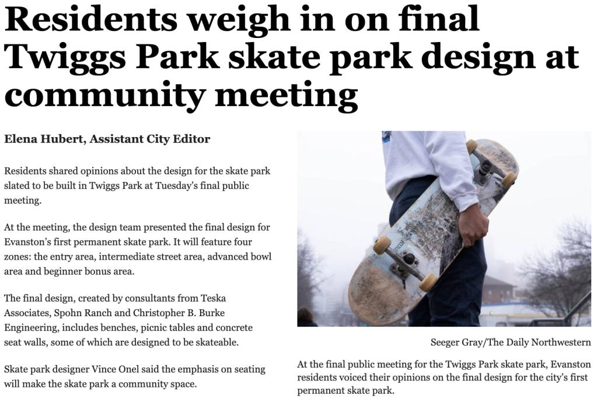
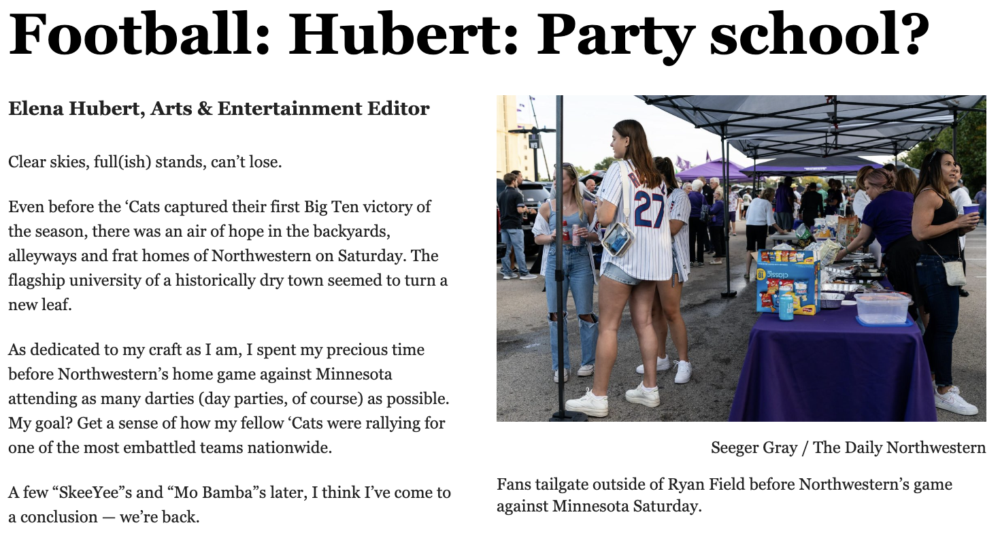
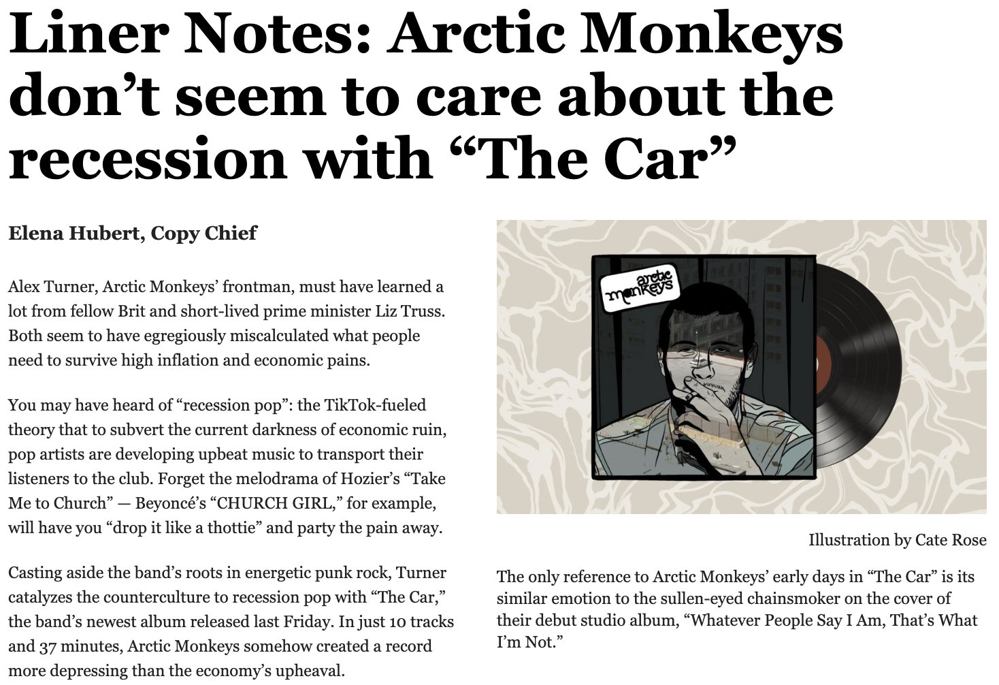

Projects
Utilizing Flourish, I created this data visualization in September 2024 using crime occurrence data from the Chicago Police Department from 2001 to present. Breaking down each crime by type, I aimed to show trends in certain kinds of crimes per year in a city historically impacted by crime.
If you're unable to view this infographic, click here for a static backup
{kind=link}
Publications
During my time at the Daily Northwestern, I created and produced an original concert series called "Notes from the Newsroom." I had student bands and musicians come into the Daily's newsroom and perform a set of original music. It was a great way to engage our readership with the arts scene on campus and the Daily itself,
This was my first front page story for the Daily Northwestern that I wrote during my sophomore year. I always appreciate becoming closer to my community members through my reporting, so I had a great time chatting with residents of all ages about their skating stories. I even have a close friend still today that I met while writing this story!
"Football: Hubert: Party school?" The Daily Northwestern, September 2023.
This was my all-time favorite story that I wrote during my time at The Daily, and it was arguably my least thought-out. I was on the Gameday desk my junior fall, covering football with my little working knowledge of my sport. What I did know, however, was the social scene at Northwestern, which I leveraged to write the most viewed story the desk published that fall. I attended as many "darties" or "day parties" as possible, trying to get a sense of how NU fans were rallying after an embattled summer. It made for a fun, tongue-in-cheek piece that people still talk to me about to this day.
A long-time Arctic Monkey fans and general lover of all things music, I cherished writing this album review on their latest album. Music reviews are always fun to write because your only objective is to detail your opinion as creatively as possible. I thought this piece did the job.
Plus More
I created this visualization in October 2024 based on City of Chicago data from 2012 detailing the locations of farmer's markets and the number of grocery stores per ward. With Flourish, I created a map visualization that should serve to highlight food insecurity alongside grassroots efforts to bring fresh food via farmer's markets.
If you're unable to view this infographic, click here for a static backup
{kind=link}